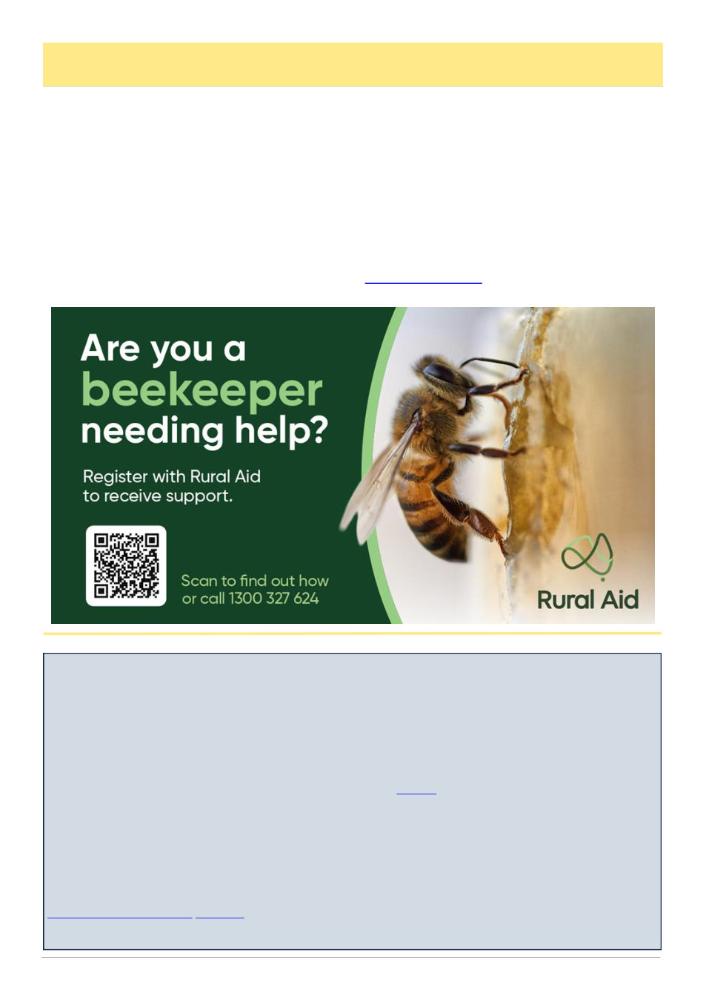

July 2026
29
AHBIC Biosecurity Update, cont’d
Supporting Beekeepers Through
Challenging Seasons
Australia‘s beekeeping industry plays a vital role in
agriculture, food production and regional communities.
Many beekeepers are currently facing ongoing chal-
lenges, including the impact of varroa mite, rising oper-
ational costs, biosecurity concerns and seasonal pres-
sures.
At Rural Aid, we understand that hardship can affect
all primary producers, including apiarists.
Our financial assistance program is available to sup-
port eligible primary producers experiencing hardship
due to drought, flood, fire, biosecurity events and other
significant challenges. This assistance can help ease
immediate pressures and provide some support as pro-
ducers manage their operations and plan ahead.
In addition, Rural Aid offers wellbeing support ser-
vices and works alongside rural communities through a
range of programs designed to help people navigate
difficult seasons.
If you are a beekeeper experiencing hardship, or
know someone who may benefit from support, we en-
courage you to reach out.
Rural Aid is here to support farmers, families and
rural communities through every season.
Learn more about available support:
Need assistance? Contact our team:1300 327 624
(Continued from page 28)
Wheen Bee Foundation newsletter July 2026
How the next generation's education will impact pollinator protection
The education and awareness of the next generation will play a vital role in protecting Australia's pollinators.
Australian Pollinator Week 2026 will take place from Saturday, 7 November to Sunday, 15 November.
This year's theme is Pollinator Education: Inspiring the Next Generation.
The theme highlights the importance of helping young people build knowledge and understanding of Australia's pol-
linators, and the role they play in securing the future of pollination.
School programs, community projects and hands-on learning experiences help foster curiosity, encourage action and
support the development of future pollinator champions. Visit the website to find out more about how to take part.
Take action to restore Australia's landscape
Landcare Week is coming up from Monday, 3 August to Sunday, 9 August. It's a campaign to celebrate the people
who are actively restoring, enhancing and protecting the environment.
This year's theme, Experience Landcare, encourages Australian's to participate in their local Landcare activities and
experience the positive impact of caring for the environment.
Landcare groups help restore landscapes and waterways, improve biodiversity, build healthier soils and create habi-
tat for Australia's pollinators and other native wildlife.
Find out how to Experience Landcare this Landcare Week and see how small local actions can make a lasting differ-
ence.